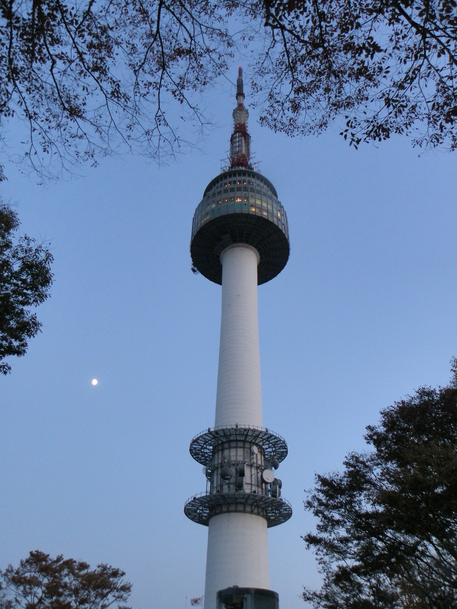
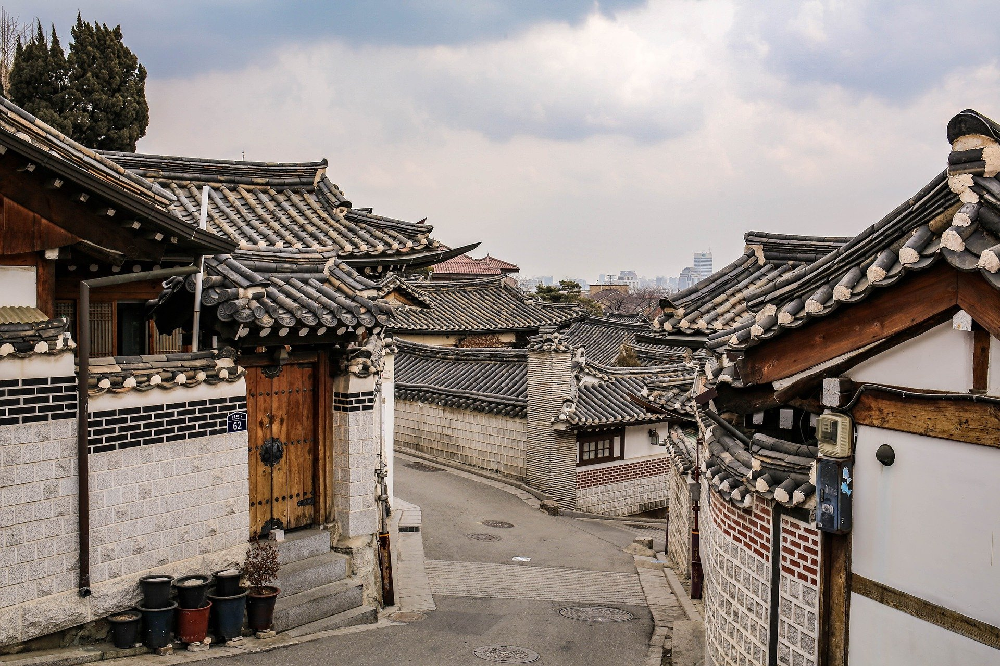
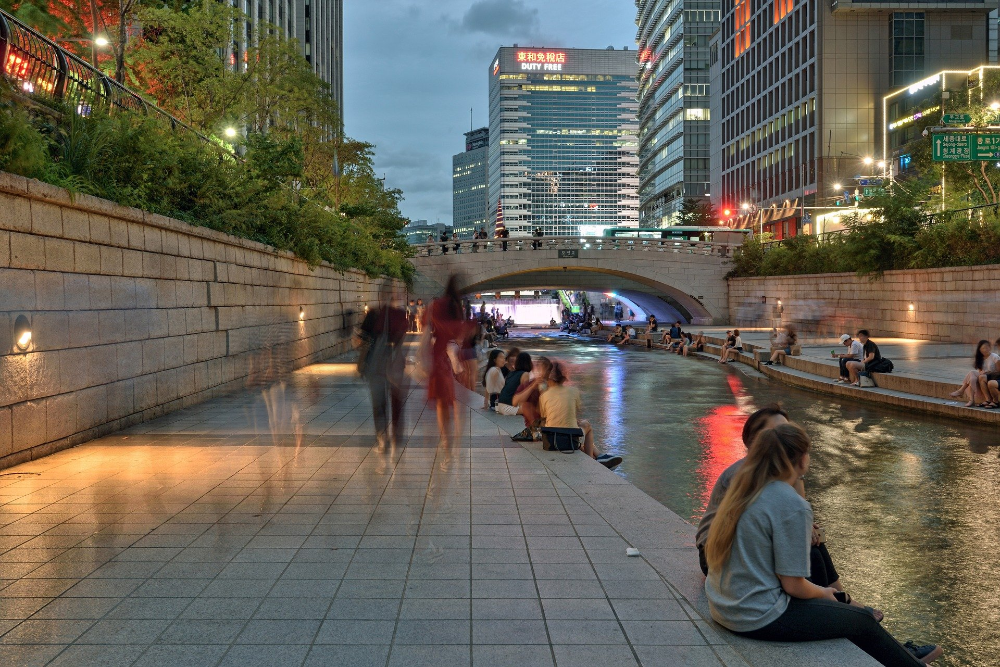
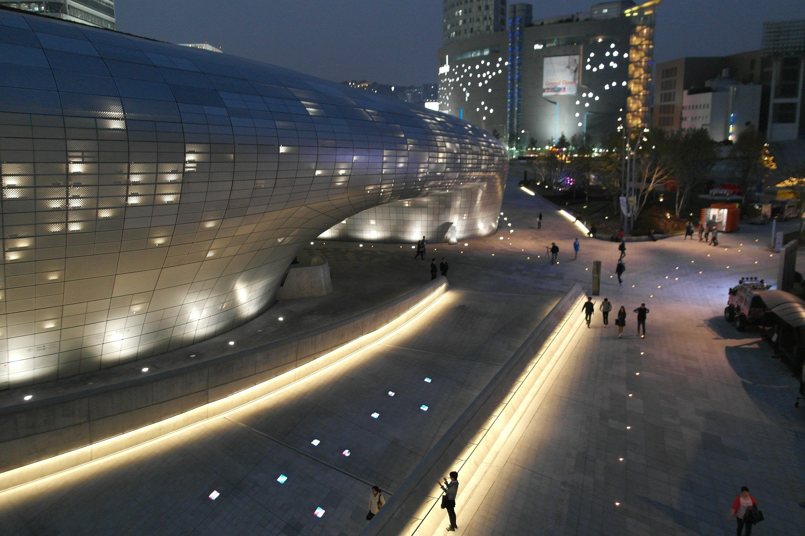

시민이 행복한 도시, 서울
시민이 행복한 도시, 서울
남산서울타워는 예로부터 백년해로의 길지로 널리 알려진 남산(262m) 정상에 위치한 높이 236.7m의 탑으로, 해발 480m 위치에서 서울시를 360도 파노라마 뷰로 조망할 수 있는 최고의 전망을 자랑합니다. 외국인이 선택한 관광 명소 1위로 꼽힌 바 있는 서울의 상징이자, 영원한 사랑을 꿈꾸는 전세계 연인들의 로맨스 성지입니다. 연인들을 위한 로맨틱한 체험 콘텐츠 '사랑의 자물쇠'와 '하트 의자'가 큰 인기압니다. 가족들을 위한 캐릭터 체험 전시관으로 '헬로키티아일랜드'와 '쎈토이뮤지엄&쇼룸' 등이 있습니다. 또한 서울 전경을 바라보며 즐길 수 있는 미슐랭 스타쉐프가 선사하는 고품격 프렌치 코스 ‘엔그릴’, 30여종의 한식뷔페와 전통적인 한식 정찬 ‘한쿡’ 등 특별한 다이닝이 갖추어져 있습니다. 웹사이트 보기
북촌한옥마을은 서울을 넘어 대한민국을 대표하는 전통골목입니다. 외국인에게 가장 잘 알려진 동네이고 많은 관광객이 찾는 곳입니다. 북촌은 경복궁과 창덕궁, 종묘 사이에 위치하고 있습니다. 전통한옥이 밀집된 서울의 대표적 전통 주거지입니다. 많은 사적들과 문화재, 민속자료가 있어 도심 속의 거리 박물관이라 불리는 곳입니다. 웹사이트 보기
청계천은 종로구와 중구 사이를 가르는 10.84km의 하천입니다. 2003년 7월부터 2005년 9월까지 청계천은 엄청난 변신을 도모했습니다. 복개한 청계천로와 삼일로 주변 5.84km 구간을 복원하고 총 22개의 다리를 설치하는 등 시민들의 쉼터로 탈바꿈하기 위한 대대적인 공사였습니다. 청계광장을 중심으로 각종 문화행사 등이 열리면서 지금은 광장의 역할도 하고 있습니다. 최근에는 예술 공간으로서의 역할도 훌륭히 해내고 있습니다. 광교갤러리와 청계창작스튜디오 같은 창작 무대에서는 예술가들의 감성을 만날 수 있습니다. 주말에는 거리 예술가들의 공연이 펼쳐집니다. 웹사이트 보기
동대문 DDP(동대문디자인플라자)는 ‘디자인･창조산업의 발신지’를 모토로 하는 복합문화공간입니다. 2014년 3월 21일 예전 동대문운동장 자리에 개관한 DDP는 컨벤션, 전시, 공연, 패션쇼 등이 상시 이뤄지는 공간으로 세계 최대 규모의 3차원 비정형 랜드마크 건축물입니다. 지하 3층, 지상 4층 규모의 DDP는 알림터, 배움터, 살림터, 디자인장터, 동대문역사문화공원의 5개 시설로 구성되어 총 15개 공간이 자리잡고 있습니다. 알림터는 디자인 창조산업의 신제품과 트렌드를 소개하는 공간, 배움터는 전시를 통해 지식을 전파하는 공간, 살림터는 다양한 최신 트렌드 상품을 접할 수 있는 공간으로 꾸며졌습니다. 디자인장터는 ‘문화콘텐츠+체험+Shop in Shop’ 개념의 복합편집형 편의공간입니다. 웹사이트 보기